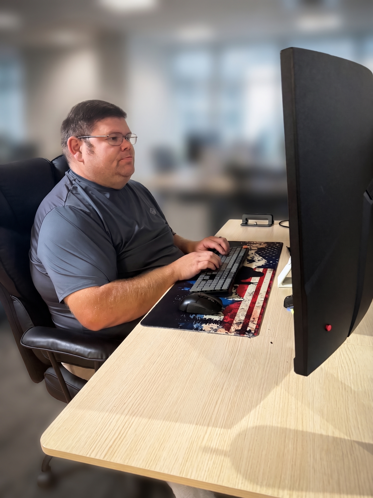

C# Developer · AWS Associate Developer · Linux Administrator in Training
Building clean, efficient solutions one line at a time
I’m an aspiring software developer with a passion for learning, building, and solving problems through code. I originally started my programming journey with Python and later expanded into C# and the .NET Framework through the TrueCoders bootcamp, where I continue developing my skills in software engineering and modern application development. I enjoy working across multiple technologies including C#, Python, JavaScript, HTML, and CSS, and I’m constantly exploring new languages, frameworks, and tools to grow as a developer. I also have experience working with multiple LLMs and AI-assisted development workflows, using them to improve productivity, learn faster, and experiment with creative solutions. Outside of programming, I bring a strong background in sales, marketing, customer relations, and heavy equipment operations, giving me a unique mix of technical curiosity and real-world problem-solving experience. That combination helps me communicate effectively, adapt quickly, and approach development with both creativity and practicality. I’m currently focused on building projects, expanding my portfolio, and transitioning into a professional software development career. Whether it’s creating small Python games, building C# applications, designing clean GitHub projects, or experimenting with developer aesthetics and retro terminal-inspired interfaces, I enjoy turning ideas into something functional and engaging. When I’m not coding, you’ll probably find me customizing desk setups, organizing programming notebooks, brainstorming project ideas, or coming up with funny developer-themed names for things that absolutely don’t need developer-themed names.
Email: brownzach09@outlook.com
LinkedIn: My LinkedIn
GitHub: My GitHub